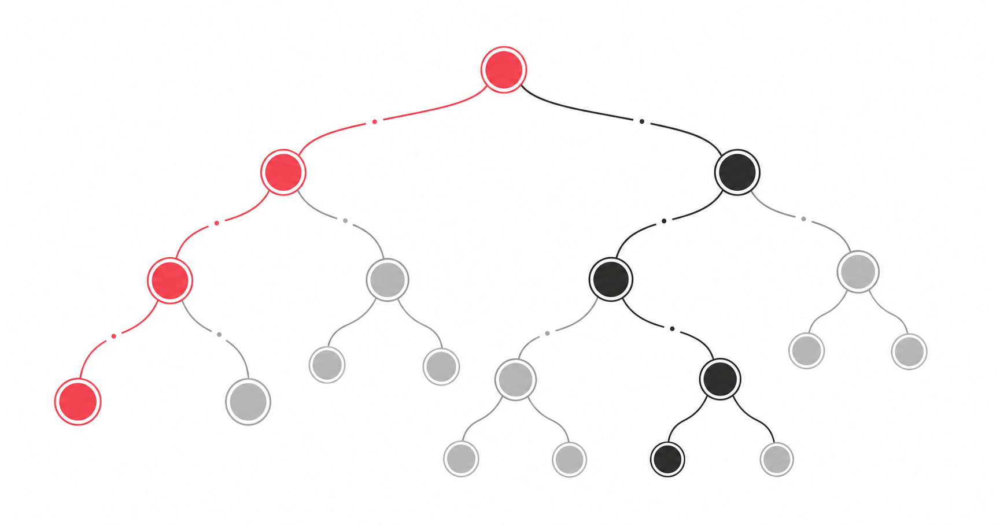

軟體工程師面試｜Binary Tree + 白板題 7 天速成
給「全靠 AI 寫程式、演算法都還給老師」的新手。一週後上戰場，重點不是徒手寫完美 code，是能跟面試官口頭把思路講清楚。

💡 這份在解什麼
新手最常的誤會：「白板題我寫不出來就完了」。錯。面試官 90% 不是在看你能不能寫到 bug-free，是在看你「會不會講思路 / 會不會問澄清問題 / 會不會討論複雜度」。
這份就是把「能上戰場開口」需要的東西，壓縮到一週能讀完。配了 NotebookLM 6 種媒體：通勤聽 podcast、看簡報、閃卡反射訓練、深度報告補完。讀完不是讓你變高手，是讓你不再因為沉默被 0 分。
🗓️ 7 天速成計畫
Day 1：二元樹基礎名詞 + 4 種 Traversal
把 root / leaf / depth / height / BST / balanced 6 個名詞背熟，能口頭解釋。然後搞懂中序 / 前序 / 後序 / 層序 4 種訪問順序。重點：BST 中序 = 升冪排序。
Day 2：Binary Tree 高頻 5 題
最大深度（LC 104）/ 反轉（LC 226）/ 路徑總和（LC 112）/ LCA（LC 236）/ 直徑（LC 543）。重點：每題練「畫圖 + 口頭講思路」，不要只記答案。
Day 3：Array + 雙指針 + 滑動視窗
面試最高頻 30%。Two Sum / Best Time to Buy Stock / Move Zeroes / Container With Most Water。背一個雙指針模板能解 5 題。
Day 4：Hash Table 5 題
Two Sum、Group Anagrams、Valid Anagram、Contains Duplicate、Top K Frequent。記住一個原則：用空間換時間。把 O(n²) 暴力解降到 O(n) 就靠 hash table。
Day 5：Linked List + Stack 經典
反轉 Linked List、找中點（快慢指針）、Cycle 偵測、括號配對。這幾題是面試萬年標配，記住模板就好。
Day 6：模擬面試（白板講解 5 題）
找朋友當面試官，或對著鏡子講。重點不是寫對，是講話不能停。每題練「複述需求 → 舉例畫圖 → 講思路 → 寫 code → 驗證」5 步驟。
Day 7：自我介紹腳本 + 反問清單
背好 90 秒自我介紹（4 段結構）。準備好要反問面試官的 4 題。看一遍公司官網，找 1-2 個「打動你的點」當開場。
🌳 Binary Tree 高頻 10 題速覽
#1 最大深度（LC 104）
Easy · 必考遞迴：base case 是 null 回 0，否則回 1 + max(左, 右)。時間 O(n) 空間 O(h)。
#2 反轉二元樹（LC 226）
Easy · Max Howell 沒進 Google 那題每個節點交換 left / right，遞迴處理子樹。一行就解。
#3 判斷對稱（LC 101）
Easy比對 left.left vs right.right、left.right vs right.left。用輔助函式遞迴。
#4 同一棵樹（LC 100）
Easy同步走兩棵樹，比結構與值。null 也要對齊。
#5 路徑總和（LC 112）
Easy每往下一層 target 減去當前節點值，到 leaf 看是否歸零。
#6 層序遍歷（LC 102）
Medium · 高頻用 Queue（BFS），記得每層處理完才下一層。for _ in range(len(queue)) 是關鍵。
#7 驗證 BST（LC 98）
Medium · 易踩坑不能只看 left.val < root < right.val。要傳上下界，或中序遍歷後檢查升冪。
#8 LCA 最近共同祖先（LC 236）
Medium · 必考遞迴找：root 是 p 或 q 就回 root，左右子樹各找一次，兩邊都找到答案就是 root。
#9 序列化與反序列化（LC 297）
Hard · 加分題前序 + null 標記。新手講方向能加分，不一定要寫完。
#10 二元樹直徑（LC 543）
Easy · 後序遍歷練習後序遍歷算每節點「左高 + 右高」，全域記錄最大值。
📊 Big O 複雜度速查表（口頭被問必答）
| 操作 | 平均 | 最壞 |
|---|---|---|
| BST 搜尋 / 插入 / 刪除 | O(log n) | O(n)（退化成 linked list） |
| Traversal（任何順序） | O(n) | O(n) |
| 遞迴空間（call stack） | O(h) | O(n) |
| Hash Table 查找 | O(1) | O(n)（hash 衝突） |
| 排序（一般） | O(n log n) | O(n²)（快排最壞） |
| Binary Search | O(log n) | O(log n) |
口頭模板：「時間 O(n)，每個節點訪問一次。空間 O(h)，h 是樹高，平衡樹是 log n，最壞 n。」
🎤 萬用回答 5 句模板
「我先確認一下需求…」
每題都先問澄清問題：「input 是 X？output 是 Y？空陣列怎麼處理？重複元素呢？」
「我先寫個暴力解，再來想怎麼優化。」
暴力解能讓面試官看到你能想到方向。優化是加分項不是必須。
「這裡可以用空間換時間，加個 hash table 降到 O(n)。」
面試官最愛聽的句子之一。代表你懂取捨。
「讓我用一個小例子驗證一下。」
寫完 code 後手動跑一遍輸入，能抓 70% 的小 bug。
「邊界情況我想想，空陣列、單一元素、全部相同…」
主動提邊界，比被面試官提醒之後再補強得多。
⚠️ 新手最常踩的 5 個雷
- ❌ 沉默思考超過 30 秒✅ 卡住也要持續講。「我在想要不要用遞迴…」「這題如果用 hash table 應該可以…」面試官比較怕沒反應，不怕你講錯。
- ❌ 忘記檢查 null / 空陣列✅ 每個遞迴函式開頭都先寫
if not node: return ...。每個 array 操作前先想「空的會怎樣」。 - ❌ 複雜度亂講 O(log n)✅ 不是任何操作都是 log n！traversal 永遠 O(n)。只有平衡 BST 的搜尋/插入/刪除才是 log n。
- ❌ 只記答案不會講思路✅ 面試現場會緊張，背的程式碼會打結。練「能講出每行在做什麼」比背 code 重要 10 倍。
- ❌ 不問澄清問題就開寫✅ 直接開寫顯得粗心。先問 3 個澄清問題，面試官會覺得你有產品思維。
📚 延伸資源
- 題庫LeetCode — 演算法題庫龍頭，新手按 Topic 練 Easy 30 題就有感
- 題庫NeetCode — 把 LeetCode 高頻題分類整理，附影片講解
- 教材Hello 演算法 — 中文免費電子書，圖解超清楚
- 影片NeetCode YouTube — 用畫圖講解每題思路
- 面試Tech Interview Handbook — 軟體工程師面試準備全攻略
📦 配套：NotebookLM 6 媒體版本
📓 完整 NotebookLM 知識包
同樣內容做了 6 種媒體格式：簡報、Podcast、深度報告、資訊圖、閃卡、心智圖。通勤聽 podcast、面試前一晚滑簡報、做閃卡反射訓練。
→ 開啟 NotebookLM 完整版